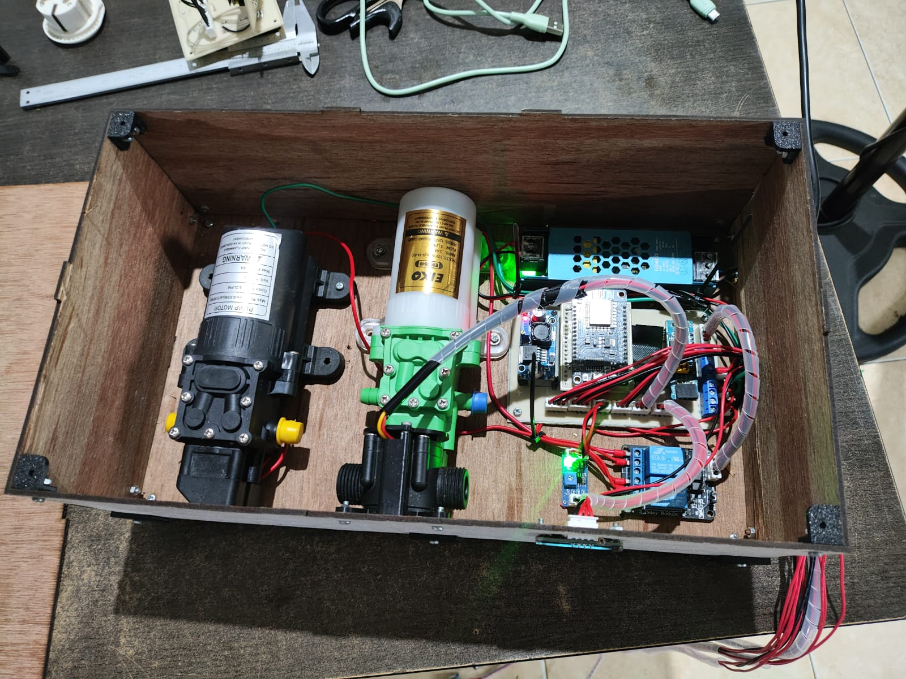

Tomatoes Smart Monitoring
Building an Automated Plant Care System

Maintaining healthy tomato plants requires consistent attention—especially when it comes to watering and pest control. To address this challenge, I developed Tomatoes Smart Monitoring, an automated microcontroller-based system designed to improve efficiency, reduce manual effort, and ensure optimal plant conditions.
Project Overview
Tomatoes Smart Monitoring is built to handle two critical aspects of plant care: irrigation and protection. The system continuously monitors soil moisture levels in real time and automatically activates irrigation when the soil becomes too dry. This ensures that plants receive the right amount of water without relying on manual intervention.
Beyond irrigation, the system also integrates an automatic pesticide spraying mechanism. This feature helps protect tomato plants from pests and diseases, making the system not only reactive but also preventive in maintaining plant health.
To enhance reliability, liquid level sensors are incorporated into both the water and pesticide reservoirs. These sensors detect when the liquid levels are low or empty, preventing pump dry-run conditions and ensuring timely refilling—an important safeguard for both the hardware and the plants.
My Contributions
Electronics Design
I designed the complete electronic system, including schematic development and PCB layout. The design integrates the microcontroller, soil moisture sensor, liquid level sensors, pump driver circuits, and power regulation to ensure stable, efficient, and reliable operation under real-world conditions.
Component Selection
Careful component selection was essential for durability and performance. I selected sensors, voltage regulators, connectors, and driver components based on electrical requirements and suitability for field use, ensuring the system remains robust over time.
PCB Assembly
I carried out the PCB assembly process, including soldering components, establishing wiring connections, and verifying circuit continuity. This ensured that the physical hardware accurately reflected the design and functioned as intended.
Hardware Testing and Troubleshooting
Extensive testing was performed to validate system functionality, including sensor accuracy, automatic pump control, and protection mechanisms. I also handled debugging and troubleshooting to improve overall system reliability.
Casing and Enclosure Design
To protect the electronics, I designed a dedicated enclosure that shields components from dust, moisture, and mechanical impact. The design also ensures proper layout, cable management, and ease of installation for real-world deployment.
Conclusion
Tomatoes Smart Monitoring demonstrates how automation and embedded systems can significantly improve agricultural practices. By combining real-time sensing, automated control, and protective mechanisms, the system reduces manual workload while increasing consistency and reliability in plant care.
This project reflects a practical application of electronics design, embedded systems, and hardware integration to solve everyday problems in agriculture—making plant maintenance smarter, safer, and more efficient.